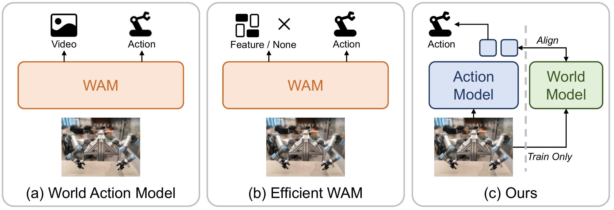
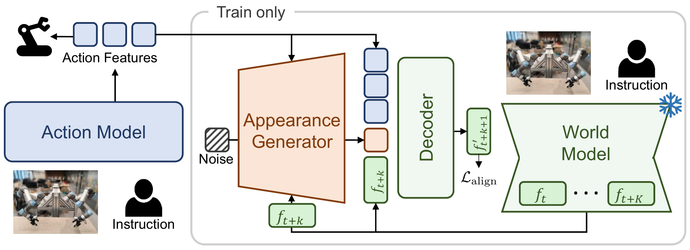
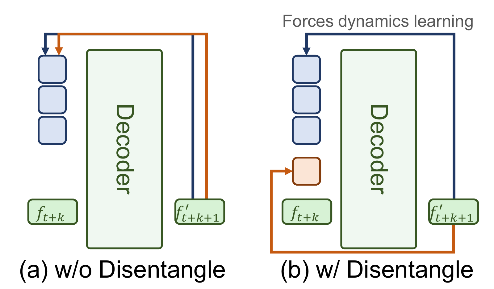
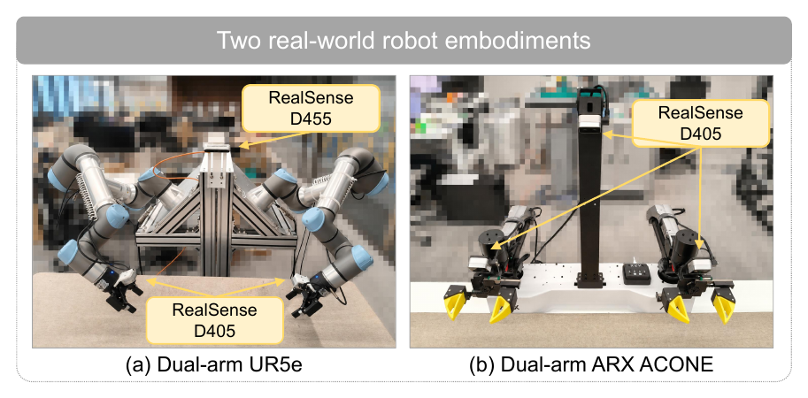

Task 1 / 6
Insert the drill
Insert the drill into the holder.
Rollouts are shown at 2× speed.
A world model should teach during training, while an action model executes independently at inference.
Future visual predictions contain useful physical dynamics, but generating them at every control step adds computational cost. DAWN transfers the world model’s knowledge into the action policy during training, so deployment requires only the action model.

A frozen world model provides future structural features. Dynamics-appearance disentangled distillation encourages the action model to absorb manipulation-relevant dynamics while the auxiliary pathway handles appearance.

World-model features mix object motion, gripper changes, and contact transitions with textures, lighting, and backgrounds. An appearance pathway models visual detail, encouraging the action representation to encode the complementary dynamics relevant to control.
The teacher uses LTX-Video; the standalone policy uses a Qwen3-VL backbone and an MLP action head. The appearance pathway is initialized from InstructPix2Pix.


Insert the drill into the holder.
Rollouts are shown at 2× speed.
Hang the towel on the hanger.
Rollouts are shown at 2× speed.
Place the chain into the box and close the box.
Rollouts are shown at 2× speed.
Fold the cloth on the tabletop.
Rollouts are shown at 2× speed.
Fold the towel.
Rollouts are shown at 2× speed.
Stack the blocks.
Rollouts are shown at 2× speed.
Representative trials without world-model distillation, without disentanglement, and with the full DAWN model.
The policy grasps and moves the towel, but does not complete the final fold. This illustrates a remaining failure mode in deformable-object manipulation.
Evaluation on LIBERO, LIBERO-Plus, RoboTwin 2.0, and six real-world manipulation tasks.
| Method | LIBERO | LIBERO-Plus | RoboTwin 2.0 |
|---|---|---|---|
| DAWN ACTION ONLY | 97.2 | 78.7 | 71.3 |
| DAWN w/ WM inference | 97.3 | 78.5 | 71.5 |
| DAWN w/o WM distillation | 96.6 | 75.4 | 57.1 |
LIBERO: 40 tasks, 50 episodes per task. LIBERO-Plus: seven perturbation dimensions without fine-tuning. RoboTwin 2.0: ten jointly trained tasks in the clean setting.
Six tasks, evaluated over 20 trials each. All methods use 300 demonstrations per task.
| Task | GR00T N1.5 | VPP | DAWN |
|---|---|---|---|
| Insert drill | 10/20 | 6/20 | 11/20 |
| Hang towel | 13/20 | 8/20 | 15/20 |
| Chain & close box | 16/20 | 10/20 | 16/20 |
| Fold cloth | 14/20 | 7/20 | 13/20 |
| Fold towel | 11/20 | 5/20 | 14/20 |
| Stack blocks | 18/20 | 15/20 | 18/20 |
| Average success | 68.3% | 42.5% | 72.5% |
Stack the Blocks: 300 demonstrations and 20 trials with blocks placed at extreme positions.
Without world-model
distillation
Without
disentanglement
Full
DAWN